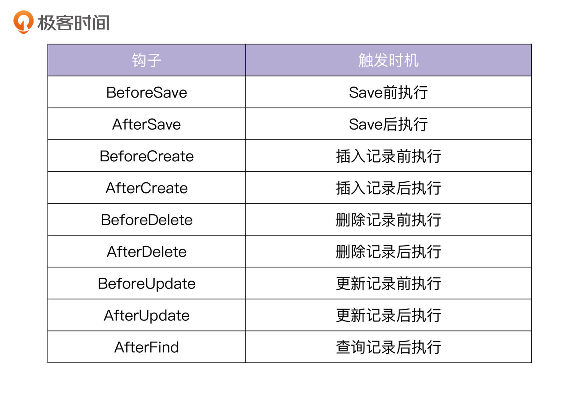

- 00 开篇词 从 0 开始搭建一个企业级 Go 应用.md.html
- 01 IAM系统概述：我们要实现什么样的 Go 项目？.md.html
- 02 环境准备：如何安装和配置一个基本的 Go 开发环境？.md.html
- 03 项目部署：如何快速部署 IAM 系统？.md.html
- 04 规范设计（上）：项目开发杂乱无章，如何规范？.md.html
- 05 规范设计（下）：commit 信息风格迥异、难以阅读，如何规范？.md.html
- 06 目录结构设计：如何组织一个可维护、可扩展的代码目录？.md.html
- 07 工作流设计：如何设计合理的多人开发模式？.md.html
- 08 研发流程设计（上）：如何设计 Go 项目的开发流程？.md.html
- 09 研发流程设计（下）：如何管理应用的生命周期？.md.html
- 10 设计方法：怎么写出优雅的 Go 项目？.md.html
- 11 设计模式：Go常用设计模式概述.md.html
- 12 API 风格（上）：如何设计RESTful API？.md.html
- 13 API 风格（下）：RPC API介绍.md.html
- 14 项目管理：如何编写高质量的Makefile？.md.html
- 15 研发流程实战：IAM项目是如何进行研发流程管理的？.md.html
- 16 代码检查：如何进行静态代码检查？.md.html
- 17 API 文档：如何生成 Swagger API 文档 ？.md.html
- 18 错误处理（上）：如何设计一套科学的错误码？.md.html
- 19 错误处理（下）：如何设计错误包？.md.html
- 20 日志处理（上）：如何设计日志包并记录日志？.md.html
- 21 日志处理（下）：手把手教你从 0 编写一个日志包.md.html
- 22 应用构建三剑客：Pflag、Viper、Cobra 核心功能介绍.md.html
- 23 应用构建实战：如何构建一个优秀的企业应用框架？.md.html
- 24 Web 服务：Web 服务核心功能有哪些，如何实现？.md.html
- 25 认证机制：应用程序如何进行访问认证？.md.html
- 26 IAM项目是如何设计和实现访问认证功能的？.md.html
- 27 权限模型：5大权限模型是如何进行资源授权的？.md.html
- 28 控制流（上）：通过iam-apiserver设计，看Web服务的构建.md.html
- 29 控制流（下）：iam-apiserver服务核心功能实现讲解.md.html
- 30 ORM：CURD 神器 GORM 包介绍及实战.md.html
- 31 数据流：通过iam-authz-server设计，看数据流服务的设计.md.html
- 32 数据处理：如何高效处理应用程序产生的数据？.md.html
- 33 SDK 设计（上）：如何设计出一个优秀的 Go SDK？.md.html
- 34 SDK 设计（下）：IAM项目Go SDK设计和实现.md.html
- 35 效率神器：如何设计和实现一个命令行客户端工具？.md.html
- 36 代码测试（上）：如何编写 Go 语言单元测试和性能测试用例？.md.html
- 37 代码测试（下）：Go 语言其他测试类型及 IAM 测试介绍.md.html
- 38 性能分析（上）：如何分析 Go 语言代码的性能？.md.html
- 39 性能分析（下）：API Server性能测试和调优实战.md.html
- 40 软件部署实战（上）：部署方案及负载均衡、高可用组件介绍.md.html
- 41 软件部署实战（中）：IAM 系统生产环境部署实战.md.html
- 42 软件部署实战（下）：IAM系统安全加固、水平扩缩容实战.md.html
- 43 技术演进（上）：虚拟化技术演进之路.md.html
- 44 技术演进（下）：软件架构和应用生命周期技术演进之路.md.html
- 45 基于Kubernetes的云原生架构设计.md.html
- 46 如何制作Docker镜像？.md.html
- 47 如何编写Kubernetes资源定义文件？.md.html
- 48 IAM 容器化部署实战.md.html
- 49 服务编排（上）：Helm服务编排基础知识.md.html
- 50 服务编排（下）：基于Helm的服务编排部署实战.md.html
- 51 基于 GitHub Actions 的 CI 实战.md.html
- 特别放送 Go Modules依赖包管理全讲.md.html
- 特别放送 Go Modules实战.md.html
- 特别放送 IAM排障指南.md.html
- 特别放送 分布式作业系统设计和实现.md.html
- 特别放送 给你一份Go项目中最常用的Makefile核心语法.md.html
- 特别放送 给你一份清晰、可直接套用的Go编码规范.md.html
- 直播加餐 如何从小白进阶成 Go 语言专家？.md.html
- 结束语 如何让自己的 Go 研发之路走得更远？.md.html
- 捐赠
30 ORM：CURD 神器 GORM 包介绍及实战
你好，我是孔令飞。
在用Go开发项目时，我们免不了要和数据库打交道。每种语言都有优秀的ORM可供选择，在Go中也不例外，比如gorm、xorm、gorose等。目前，GitHub上 star数最多的是GORM，它也是当前Go项目中使用最多的ORM。
IAM项目也使用了GORM。这一讲，我就来详细讲解下GORM的基础知识，并介绍iam-apiserver是如何使用GORM，对数据进行CURD操作的。
GORM基础知识介绍
GORM是Go语言的ORM包，功能强大，调用方便。像腾讯、华为、阿里这样的大厂，都在使用GORM来构建企业级的应用。GORM有很多特性，开发中常用的核心特性如下：
- 功能全。使用ORM操作数据库的接口，GORM都有，可以满足我们开发中对数据库调用的各类需求。
- 支持钩子方法。这些钩子方法可以应用在Create、Save、Update、Delete、Find方法中。
- 开发者友好，调用方便。
- 支持Auto Migration。
- 支持关联查询。
- 支持多种关系数据库，例如MySQL、Postgres、SQLite、SQLServer等。
GORM有两个版本，V1和V2。遵循用新不用旧的原则，IAM项目使用了最新的V2版本。
通过示例学习GORM
接下来，我们先快速看一个使用GORM的示例，通过该示例来学习GORM。示例代码存放在marmotedu/gopractise-demo/gorm/main.go文件中。因为代码比较长，你可以使用以下命令克隆到本地查看：
$ mkdir -p $GOPATH/src/github.com/marmotedu
$ cd $GOPATH/src/github.com/marmotedu
$ git clone https://github.com/marmotedu/gopractise-demo
$ cd gopractise-demo/gorm/
假设我们有一个MySQL数据库，连接地址和端口为 127.0.0.1:3306 ，用户名为 iam ，密码为 iam1234 。创建完main.go文件后，执行以下命令来运行：
$ go run main.go -H 127.0.0.1:3306 -u iam -p iam1234 -d test
2020/10/17 15:15:50 totalcount: 1
2020/10/17 15:15:50 code: D42, price: 100
2020/10/17 15:15:51 totalcount: 1
2020/10/17 15:15:51 code: D42, price: 200
2020/10/17 15:15:51 totalcount: 0
在企业级Go项目开发中，使用GORM库主要用来完成以下数据库操作：
- 连接和关闭数据库。连接数据库时，可能需要设置一些参数，比如最大连接数、最大空闲连接数、最大连接时长等。
- 插入表记录。可以插入一条记录，也可以批量插入记录。
- 更新表记录。可以更新某一个字段，也可以更新多个字段。
- 查看表记录。可以查看某一条记录，也可以查看符合条件的记录列表。
- 删除表记录。可以删除某一个记录，也可以批量删除。删除还支持永久删除和软删除。
- 在一些小型项目中，还会用到GORM的表结构自动迁移功能。
GORM功能强大，上面的示例代码展示的是比较通用的一种操作方式。
上述代码中，首先定义了一个GORM模型（Models），Models是标准的Go struct，用来代表数据库中的一个表结构。我们可以给 Models 添加 TableName 方法，来告诉 GORM 该Models映射到数据库中的哪张表。Models定义如下：
type Product struct {
gorm.Model
Code string `gorm:"column:code"`
Price uint `gorm:"column:price"`
}
// TableName maps to mysql table name.
func (p *Product) TableName() string {
return "product"
}
如果没有指定表名，则GORM使用结构体名的蛇形复数作为表名。例如：结构体名为 DockerInstance ，则表名为 dockerInstances 。
在之后的代码中，使用Pflag来解析命令行的参数，通过命令行参数指定数据库的地址、用户名、密码和数据库名。之后，使用这些参数生成建立 MySQL 连接需要的配置文件，并调用 gorm.Open 建立数据库连接：
var (
host = pflag.StringP("host", "H", "127.0.0.1:3306", "MySQL service host address")
username = pflag.StringP("username", "u", "root", "Username for access to mysql service")
password = pflag.StringP("password", "p", "root", "Password for access to mysql, should be used pair with password")
database = pflag.StringP("database", "d", "test", "Database name to use")
help = pflag.BoolP("help", "h", false, "Print this help message")
)
func main() {
// Parse command line flags
pflag.CommandLine.SortFlags = false
pflag.Usage = func() {
pflag.PrintDefaults()
}
pflag.Parse()
if *help {
pflag.Usage()
return
}
dsn := fmt.Sprintf(`%s:%s@tcp(%s)/%s?charset=utf8&parseTime=%t&loc=%s`,
*username,
*password,
*host,
*database,
true,
"Local")
db, err := gorm.Open(mysql.Open(dsn), &gorm.Config{})
if err != nil {
panic("failed to connect database")
}
}
创建完数据库连接之后，会返回数据库实例 db ，之后就可以调用db实例中的方法，完成数据库的CURD操作。具体操作如下，一共可以分为六个操作：
第一个操作，自动迁移表结构。
// 1. Auto migration for given models
db.AutoMigrate(&Product{})
我不建议你在正式的代码中自动迁移表结构。因为变更现网数据库是一个高危操作，现网数据库字段的添加、类型变更等，都需要经过严格的评估才能实施。这里将变更隐藏在代码中，在组件发布时很难被研发人员感知到，如果组件启动，就可能会自动修改现网表结构，也可能会因此引起重大的现网事故。
GORM的AutoMigrate方法，只对新增的字段或索引进行变更，理论上是没有风险的。在实际的Go项目开发中，也有很多人使用AutoMigrate方法自动同步表结构。但我更倾向于规范化、可感知的操作方式，所以我在实际开发中，都是手动变更表结构的。当然，具体使用哪种方法，你可以根据需要自行选择。
第二个操作，插入表记录。
// 2. Insert the value into database
if err := db.Create(&Product{Code: "D42", Price: 100}).Error; err != nil {
log.Fatalf("Create error: %v", err)
}
PrintProducts(db)
通过 db.Create 方法创建了一条记录。插入记录后，通过调用 PrintProducts 方法打印当前表中的所有数据记录，来测试是否成功插入。
第三个操作，获取符合条件的记录。
// 3. Find first record that match given conditions
product := &Product{}
if err := db.Where("code= ?", "D42").First(&product).Error; err != nil {
log.Fatalf("Get product error: %v", err)
}
First方法只会返回符合条件的记录列表中的第一条，你可以使用First方法来获取某个资源的详细信息。
第四个操作，更新表记录。
// 4. Update value in database, if the value doesn't have primary key, will insert it
product.Price = 200
if err := db.Save(product).Error; err != nil {
log.Fatalf("Update product error: %v", err)
}
PrintProducts(db)
通过Save方法，可以把 product 变量中所有跟数据库不一致的字段更新到数据库中。具体操作是：先获取某个资源的详细信息，再通过 product.Price = 200 这类赋值语句，对其中的一些字段重新赋值。最后，调用 Save 方法更新这些字段。你可以将这些操作看作一种更新数据库的更新模式。
第五个操作，删除表记录。
通过 Delete 方法删除表记录，代码如下：
// 5. Delete value match given conditions
if err := db.Where("code = ?", "D42").Delete(&Product{}).Error; err != nil {
log.Fatalf("Delete product error: %v", err)
}
PrintProducts(db)
这里需要注意，因为 Product 中有 gorm.DeletedAt 字段，所以，上述删除操作不会真正把记录从数据库表中删除掉，而是通过设置数据库 product 表 deletedAt 字段为当前时间的方法来删除。
第六个操作，获取表记录列表。
products := make([]*Product, 0)
var count int64
d := db.Where("code like ?", "%D%").Offset(0).Limit(2).Order("id desc").Find(&products).Offset(-1).Limit(-1).Count(&count)
if d.Error != nil {
log.Fatalf("List products error: %v", d.Error)
}
在PrintProducts函数中，会打印当前的所有记录，你可以根据输出，判断数据库操作是否成功。
GORM常用操作讲解
看完上面的示例，我想你已经初步掌握了GORM的使用方法。接下来，我再来给你详细介绍下GORM所支持的数据库操作。
模型定义
GORM使用模型（Models）来映射一个数据库表。默认情况下，使用ID作为主键，使用结构体名的 snake_cases 作为表名，使用字段名的 snake_case 作为列名，并使用 CreatedAt、UpdatedAt、DeletedAt字段追踪创建、更新和删除时间。
使用GORM的默认规则，可以减少代码量，但我更喜欢的方式是直接指明字段名和表名。例如，有以下模型：
type Animal struct {
AnimalID int64 // 列名 `animal_id`
Birthday time.Time // 列名 `birthday`
Age int64 // 列名 `age`
}
上述模型对应的表名为 animals ，列名分别为 animal_id 、 birthday 和 age 。我们可以通过以下方式来重命名表名和列名，并将 AnimalID 设置为表的主键：
type Animal struct {
AnimalID int64 `gorm:"column:animalID;primarykey"` // 将列名设为 `animalID`
Birthday time.Time `gorm:"column:birthday"` // 将列名设为 `birthday`
Age int64 `gorm:"column:age"` // 将列名设为 `age`
}
func (a *Animal) TableName() string {
return "animal"
}
上面的代码中，通过 primaryKey 标签指定主键，使用 column 标签指定列名，通过给Models添加 TableName 方法指定表名。
数据库表通常会包含4个字段。
- ID：自增字段，也作为主键。
- CreatedAt：记录创建时间。
- UpdatedAt：记录更新时间。
- DeletedAt：记录删除时间（软删除时有用）。
GORM也预定义了包含这4个字段的Models，在我们定义自己的Models时，可以直接内嵌到结构体内，例如：
type Animal struct {
gorm.Model
AnimalID int64 `gorm:"column:animalID"` // 将列名设为 `animalID`
Birthday time.Time `gorm:"column:birthday"` // 将列名设为 `birthday`
Age int64 `gorm:"column:age"` // 将列名设为 `age`
}
Models中的字段能支持很多GORM标签，但如果我们不使用GORM自动创建表和迁移表结构的功能，很多标签我们实际上是用不到的。在开发中，用得最多的是 column 标签。
连接数据库
在进行数据库的CURD操作之前，我们首先需要连接数据库。你可以通过以下代码连接MySQL数据库：
import (
"gorm.io/driver/mysql"
"gorm.io/gorm"
)
func main() {
// 参考 https://github.com/go-sql-driver/mysql#dsn-data-source-name 获取详情
dsn := "user:pass@tcp(127.0.0.1:3306)/dbname?charset=utf8mb4&parseTime=True&loc=Local"
db, err := gorm.Open(mysql.Open(dsn), &gorm.Config{})
}
如果需要GORM正确地处理 time.Time 类型，在连接数据库时需要带上 parseTime 参数。如果要支持完整的UTF-8编码，可将charset=utf8更改为charset=utf8mb4。
GORM支持连接池，底层是用 database/sql 包来维护连接池的，连接池设置如下：
sqlDB, err := db.DB()
sqlDB.SetMaxIdleConns(100) // 设置MySQL的最大空闲连接数（推荐100）
sqlDB.SetMaxOpenConns(100) // 设置MySQL的最大连接数（推荐100）
sqlDB.SetConnMaxLifetime(time.Hour) // 设置MySQL的空闲连接最大存活时间（推荐10s）
上面这些设置，也可以应用在大型后端项目中。
创建记录
我们可以通过 db.Create 方法来创建一条记录：
type User struct {
gorm.Model
Name string
Age uint8
Birthday *time.Time
}
user := User{Name: "Jinzhu", Age: 18, Birthday: time.Now()}
result := db.Create(&user) // 通过数据的指针来创建
db.Create函数会返回如下3个值：
- user.ID：返回插入数据的主键，这个是直接赋值给user变量。
- result.Error：返回error。
- result.RowsAffected：返回插入记录的条数。
当需要插入的数据量比较大时，可以批量插入，以提高插入性能：
var users = []User{{Name: "jinzhu1"}, {Name: "jinzhu2"}, {Name: "jinzhu3"}}
DB.Create(&users)
for _, user := range users {
user.ID // 1,2,3
}
删除记录
我们可以通过Delete方法删除记录：
// DELETE from users where id = 10 AND name = "jinzhu";
db.Where("name = ?", "jinzhu").Delete(&user)
GORM也支持根据主键进行删除，例如：
// DELETE FROM users WHERE id = 10;
db.Delete(&User{}, 10)
不过，我更喜欢使用db.Where的方式进行删除，这种方式有两个优点。
第一个优点是删除方式更通用。使用db.Where不仅可以根据主键删除，还能够随意组合条件进行删除。
第二个优点是删除方式更显式，这意味着更易读。如果使用db.Delete(&User{}, 10)，你还需要确认User的主键，如果记错了主键，还可能会引入Bug。
此外，GORM也支持批量删除：
db.Where("name in (?)", []string{"jinzhu", "colin"}).Delete(&User{})
GORM支持两种删除方法：软删除和永久删除。下面我来分别介绍下。
- 软删除
软删除是指执行Delete时，记录不会被从数据库中真正删除。GORM会将 DeletedAt 设置为当前时间，并且不能通过正常的方式查询到该记录。如果模型包含了一个 gorm.DeletedAt 字段，GORM在执行删除操作时，会软删除该记录。
下面的删除方法就是一个软删除：
// UPDATE users SET deleted_at="2013-10-29 10:23" WHERE age = 20;
db.Where("age = ?", 20).Delete(&User{})
// SELECT * FROM users WHERE age = 20 AND deleted_at IS NULL;
db.Where("age = 20").Find(&user)
可以看到，GORM并没有真正把记录从数据库删除掉，而是只更新了 deleted_at 字段。在查询时，GORM查询条件中新增了AND deleted_at IS NULL条件，所以这些被设置过 deleted_at 字段的记录不会被查询到。对于一些比较重要的数据，我们可以通过软删除的方式删除记录，软删除可以使这些重要的数据后期能够被恢复，并且便于以后的排障。
我们可以通过下面的方式查找被软删除的记录：
// SELECT * FROM users WHERE age = 20;
db.Unscoped().Where("age = 20").Find(&users)
- 永久删除
如果想永久删除一条记录，可以使用Unscoped：
// DELETE FROM orders WHERE id=10;
db.Unscoped().Delete(&order)
或者，你也可以在模型中去掉gorm.DeletedAt。
更新记录
GORM中，最常用的更新方法如下：
db.First(&user)
user.Name = "jinzhu 2"
user.Age = 100
// UPDATE users SET name='jinzhu 2', age=100, birthday='2016-01-01', updated_at = '2013-11-17 21:34:10' WHERE id=111;
db.Save(&user)
上述方法会保留所有字段，所以执行Save时，需要先执行First，获取某个记录的所有列的值，然后再对需要更新的字段设置值。
还可以指定更新单个列：
// UPDATE users SET age=200, updated_at='2013-11-17 21:34:10' WHERE name='colin';
db.Model(&User{}).Where("name = ?", "colin").Update("age", 200)
也可以指定更新多个列：
// UPDATE users SET name='hello', age=18, updated_at = '2013-11-17 21:34:10' WHERE name = 'colin';
db.Model(&user).Where("name", "colin").Updates(User{Name: "hello", Age: 18, Active: false})
这里要注意，这个方法只会更新非零值的字段。
查询数据
GORM支持不同的查询方法，下面我来讲解三种在开发中经常用到的查询方式，分别是检索单个记录、查询所有符合条件的记录和智能选择字段。
- 检索单个记录
下面是检索单个记录的示例代码：
// 获取第一条记录（主键升序）
// SELECT * FROM users ORDER BY id LIMIT 1;
db.First(&user)
// 获取最后一条记录（主键降序）
// SELECT * FROM users ORDER BY id DESC LIMIT 1;
db.Last(&user)
result := db.First(&user)
result.RowsAffected // 返回找到的记录数
result.Error // returns error
// 检查 ErrRecordNotFound 错误
errors.Is(result.Error, gorm.ErrRecordNotFound)
如果model类型没有定义主键，则按第一个字段排序。
- 查询所有符合条件的记录
示例代码如下：
users := make([]*User, 0)
// SELECT * FROM users WHERE name <> 'jinzhu';
db.Where("name <> ?", "jinzhu").Find(&users)
- 智能选择字段
你可以通过Select方法，选择特定的字段。我们可以定义一个较小的结构体来接受选定的字段：
type APIUser struct {
ID uint
Name string
}
// SELECT `id`, `name` FROM `users` LIMIT 10;
db.Model(&User{}).Limit(10).Find(&APIUser{})
除了上面讲的三种常用的基本查询方法，GORM还支持高级查询，下面我来介绍下。
高级查询
GORM支持很多高级查询功能，这里我主要介绍4种。
- 指定检索记录时的排序方式
示例代码如下：
// SELECT * FROM users ORDER BY age desc, name;
db.Order("age desc, name").Find(&users)
- Limit & Offset
Offset指定从第几条记录开始查询，Limit指定返回的最大记录数。Offset和Limit值为-1时，消除Offset和Limit条件。另外，Limit和Offset位置不同，效果也不同。
// SELECT * FROM users OFFSET 5 LIMIT 10;
db.Limit(10).Offset(5).Find(&users)
- Distinct
Distinct可以从数据库记录中选择不同的值。
db.Distinct("name", "age").Order("name, age desc").Find(&results)
- Count
Count可以获取匹配的条数。
var count int64
// SELECT count(1) FROM users WHERE name = 'jinzhu'; (count)
db.Model(&User{}).Where("name = ?", "jinzhu").Count(&count)
GORM还支持很多高级查询功能，比如内联条件、Not 条件、Or 条件、Group & Having、Joins、Group、FirstOrInit、FirstOrCreate、迭代、FindInBatches等。因为IAM项目中没有用到这些高级特性，我在这里就不展开介绍了。你如果感兴趣，可以看下GORM的官方文档。
原生SQL
GORM支持原生查询SQL和执行SQL。原生查询SQL用法如下：
type Result struct {
ID int
Name string
Age int
}
var result Result
db.Raw("SELECT id, name, age FROM users WHERE name = ?", 3).Scan(&result)
原生执行SQL用法如下；
db.Exec("DROP TABLE users")
db.Exec("UPDATE orders SET shipped_at=? WHERE id IN ?", time.Now(), []int64{1,2,3})
GORM钩子
GORM支持钩子功能，例如下面这个在插入记录前执行的钩子：
func (u *User) BeforeCreate(tx *gorm.DB) (err error) {
u.UUID = uuid.New()
if u.Name == "admin" {
return errors.New("invalid name")
}
return
}
GORM支持的钩子见下表：

iam-apiserver中的CURD操作实战
接下来，我来介绍下iam-apiserver是如何使用GORM，对数据进行CURD操作的。
首先，我们需要配置连接MySQL的各类参数。iam-apiserver通过NewMySQLOptions函数创建了一个带有默认值的MySQLOptions类型的变量，将该变量传给NewApp函数。在App框架中，最终会调用MySQLOptions提供的AddFlags方法，将MySQLOptions提供的命令行参数添加到Cobra命令行中。
接着，在PrepareRun函数中，调用GetMySQLFactoryOr函数，初始化并获取仓库层的实例mysqlFactory。实现了仓库层store.Factory接口：
type Factory interface {
Users() UserStore
Secrets() SecretStore
Policies() PolicyStore
Close() error
}
GetMySQLFactoryOr函数采用了我们在 11讲 中提过的单例模式，确保iam-apiserver进程中只有一个仓库层的实例，这样可以减少内存开支和系统的性能开销。
GetMySQLFactoryOr函数中，使用github.com/marmotedu/iam/pkg/db包提供的New函数，创建了MySQL实例。New函数代码如下：
func New(opts *Options) (*gorm.DB, error) {
dsn := fmt.Sprintf(`%s:%s@tcp(%s)/%s?charset=utf8&parseTime=%t&loc=%s`,
opts.Username,
opts.Password,
opts.Host,
opts.Database,
true,
"Local")
db, err := gorm.Open(mysql.Open(dsn), &gorm.Config{
Logger: logger.New(opts.LogLevel),
})
if err != nil {
return nil, err
}
sqlDB, err := db.DB()
if err != nil {
return nil, err
}
// SetMaxOpenConns sets the maximum number of open connections to the database.
sqlDB.SetMaxOpenConns(opts.MaxOpenConnections)
// SetConnMaxLifetime sets the maximum amount of time a connection may be reused.
sqlDB.SetConnMaxLifetime(opts.MaxConnectionLifeTime)
// SetMaxIdleConns sets the maximum number of connections in the idle connection pool.
sqlDB.SetMaxIdleConns(opts.MaxIdleConnections)
return db, nil
}
上述代码中，我们先创建了一个 *gorm.DB 类型的实例，并对该实例进行了如下设置：
- 通过SetMaxOpenConns方法，设置了MySQL的最大连接数（推荐100）。
- 通过SetConnMaxLifetime方法，设置了MySQL的空闲连接最大存活时间（推荐10s）。
- 通过SetMaxIdleConns方法，设置了MySQL的最大空闲连接数（推荐100）。
GetMySQLFactoryOr函数最后创建了datastore类型的变量mysqlFactory，该变量是仓库层的变量。mysqlFactory变量中，又包含了 *gorm.DB 类型的字段 db 。
最终，我们通过仓库层的变量mysqlFactory，调用其 db 字段提供的方法来完成数据库的CURD操作。例如，创建密钥、更新密钥、删除密钥、获取密钥详情、查询密钥列表，具体代码如下（代码位于secret.go文件中）：
// Create creates a new secret.
func (s *secrets) Create(ctx context.Context, secret *v1.Secret, opts metav1.CreateOptions) error {
return s.db.Create(&secret).Error
}
// Update updates an secret information by the secret identifier.
func (s *secrets) Update(ctx context.Context, secret *v1.Secret, opts metav1.UpdateOptions) error {
return s.db.Save(secret).Error
}
// Delete deletes the secret by the secret identifier.
func (s *secrets) Delete(ctx context.Context, username, name string, opts metav1.DeleteOptions) error {
if opts.Unscoped {
s.db = s.db.Unscoped()
}
err := s.db.Where("username = ? and name = ?", username, name).Delete(&v1.Secret{}).Error
if err != nil && !errors.Is(err, gorm.ErrRecordNotFound) {
return errors.WithCode(code.ErrDatabase, err.Error())
}
return nil
}
// Get return an secret by the secret identifier.
func (s *secrets) Get(ctx context.Context, username, name string, opts metav1.GetOptions) (*v1.Secret, error) {
secret := &v1.Secret{}
err := s.db.Where("username = ? and name= ?", username, name).First(&secret).Error
if err != nil {
if errors.Is(err, gorm.ErrRecordNotFound) {
return nil, errors.WithCode(code.ErrSecretNotFound, err.Error())
}
return nil, errors.WithCode(code.ErrDatabase, err.Error())
}
return secret, nil
}
// List return all secrets.
func (s *secrets) List(ctx context.Context, username string, opts metav1.ListOptions) (*v1.SecretList, error) {
ret := &v1.SecretList{}
ol := gormutil.Unpointer(opts.Offset, opts.Limit)
if username != "" {
s.db = s.db.Where("username = ?", username)
}
selector, _ := fields.ParseSelector(opts.FieldSelector)
name, _ := selector.RequiresExactMatch("name")
d := s.db.Where(" name like ?", "%"+name+"%").
Offset(ol.Offset).
Limit(ol.Limit).
Order("id desc").
Find(&ret.Items).
Offset(-1).
Limit(-1).
Count(&ret.TotalCount)
return ret, d.Error
}
上面的代码中， s.db 就是 *gorm.DB 类型的字段。
上面的代码段执行了以下操作：
- 通过
s.db.Save来更新数据库表的各字段； - 通过
s.db.Unscoped来永久性从表中删除一行记录。对于支持软删除的资源，我们还可以通过opts.Unscoped选项来控制是否永久删除记录。true永久删除，false软删除，默认软删除。 - 通过
errors.Is(err, gorm.ErrRecordNotFound)来判断GORM返回的错误是否是没有找到记录的错误类型。 - 通过下面两行代码，来获取查询条件name的值：
selector, _ := fields.ParseSelector(opts.FieldSelector)
name, _ := selector.RequiresExactMatch("name")
我们的整个调用链是：控制层 -> 业务层 -> 仓库层。这里你可能要问：我们是如何调用到仓库层的实例mysqlFactory的呢？
这是因为我们的控制层实例包含了业务层的实例。在创建控制层实例时，我们传入了业务层的实例：
type UserController struct {
srv srvv1.Service
}
// NewUserController creates a user handler.
func NewUserController(store store.Factory) *UserController {
return &UserController{
srv: srvv1.NewService(store),
}
}
业务层的实例包含了仓库层的实例。在创建业务层实例时，传入了仓库层的实例：
type service struct {
store store.Factory
}
// NewService returns Service interface.
func NewService(store store.Factory) Service {
return &service{
store: store,
}
}
通过这种包含关系，我们在控制层可以调用业务层的实例，在业务层又可以调用仓库层的实例。这样，我们最终通过仓库层实例的 db 字段（*gorm.DB 类型）完成数据库的CURD操作。
总结
在Go项目中，我们需要使用ORM来进行数据库的CURD操作。在Go生态中，当前最受欢迎的ORM是GORM，IAM项目也使用了GORM。GORM有很多功能，常用的功能有模型定义、连接数据库、创建记录、删除记录、更新记录和查询数据。这些常用功能的常见使用方式如下：
package main
import (
"fmt"
"log"
"github.com/spf13/pflag"
"gorm.io/driver/mysql"
"gorm.io/gorm"
)
type Product struct {
gorm.Model
Code string `gorm:"column:code"`
Price uint `gorm:"column:price"`
}
// TableName maps to mysql table name.
func (p *Product) TableName() string {
return "product"
}
var (
host = pflag.StringP("host", "H", "127.0.0.1:3306", "MySQL service host address")
username = pflag.StringP("username", "u", "root", "Username for access to mysql service")
password = pflag.StringP("password", "p", "root", "Password for access to mysql, should be used pair with password")
database = pflag.StringP("database", "d", "test", "Database name to use")
help = pflag.BoolP("help", "h", false, "Print this help message")
)
func main() {
// Parse command line flags
pflag.CommandLine.SortFlags = false
pflag.Usage = func() {
pflag.PrintDefaults()
}
pflag.Parse()
if *help {
pflag.Usage()
return
}
dsn := fmt.Sprintf(`%s:%s@tcp(%s)/%s?charset=utf8&parseTime=%t&loc=%s`,
*username,
*password,
*host,
*database,
true,
"Local")
db, err := gorm.Open(mysql.Open(dsn), &gorm.Config{})
if err != nil {
panic("failed to connect database")
}
// 1. Auto migration for given models
db.AutoMigrate(&Product{})
// 2. Insert the value into database
if err := db.Create(&Product{Code: "D42", Price: 100}).Error; err != nil {
log.Fatalf("Create error: %v", err)
}
PrintProducts(db)
// 3. Find first record that match given conditions
product := &Product{}
if err := db.Where("code= ?", "D42").First(&product).Error; err != nil {
log.Fatalf("Get product error: %v", err)
}
// 4. Update value in database, if the value doesn't have primary key, will insert it
product.Price = 200
if err := db.Save(product).Error; err != nil {
log.Fatalf("Update product error: %v", err)
}
PrintProducts(db)
// 5. Delete value match given conditions
if err := db.Where("code = ?", "D42").Delete(&Product{}).Error; err != nil {
log.Fatalf("Delete product error: %v", err)
}
PrintProducts(db)
}
// List products
func PrintProducts(db *gorm.DB) {
products := make([]*Product, 0)
var count int64
d := db.Where("code like ?", "%D%").Offset(0).Limit(2).Order("id desc").Find(&products).Offset(-1).Limit(-1).Count(&count)
if d.Error != nil {
log.Fatalf("List products error: %v", d.Error)
}
log.Printf("totalcount: %d", count)
for _, product := range products {
log.Printf("\tcode: %s, price: %d\n", product.Code, product.Price)
}
}
此外，GORM还支持原生查询SQL和原生执行SQL，可以满足更加复杂的SQL场景。
GORM中，还有一个非常有用的功能是支持Hooks。Hooks可以在执行某个CURD操作前被调用。在Hook中，可以添加一些非常有用的功能，例如生成唯一ID。目前，GORM支持 BeforeXXX 、 AfterXXX 和 AfterFind Hook，其中 XXX 可以是 Save、Create、Delete、Update。
最后，我还介绍了IAM项目的GORM实战，具体使用方式跟总结中的示例代码大体保持一致，你可以返回文稿查看。
课后练习
- GORM支持AutoMigrate功能，思考下，你的生产环境是否可以使用AutoMigrate功能，为什么？
- 查看GORM官方文档，看下如何用GORM实现事务回滚功能。
欢迎你在留言区与我交流讨论，我们下一讲见。
© 2019 - 2023 Liangliang Lee. Powered by gin and hexo-theme-book.